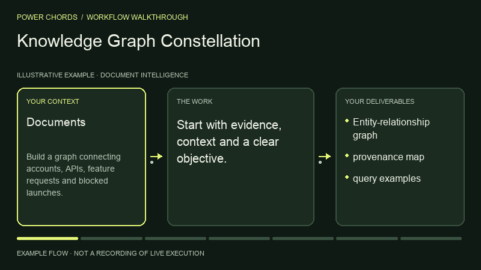

Document Intelligence · BY POWER CHORDS
Knowledge Graph Constellation
Build a relationship graph.
Your context. A result to review.
- Published by
- Power Chords
- Use with
- Codex workspace
Run in your local Codex workspace, or use the instructions with another equipped agent. Review results before acting. - Bring it to
- Claude Code · Codex · Cursor · Gemini CLI · other agents via Markdown
- Result
- Entity-relationship graph
SEE THE PROCESS
From context to entity-relationship graph.
An illustrated example of the workflow.

THE WORK, DEFINED
Inputs and outputs
What you bring
- Documents
- entities
- identifiers
- relationship definitions
What to review
- Entity-relationship graph
- provenance map
- query examples
WORKFLOW DIAGRAM
How Constellation works.
Fill gaps in evidence or access before continuing.
- INPUT
Documents · entities · identifiers · relationship definitions
- STEP 01
Define the graph schema
- STEP 02
Extract entities and candidate links
- STEP 03
Deduplicate identifiers
- STEP 04
Attach source evidence to each edge
- STEP 05
Identify central nodes and missing relationships
- REVIEW
Every relationship must have evidence or an uncertainty label
- OUTPUT
Entity-relationship graph · provenance map · query examples
Your approval → Review the work before publishing, sending, deploying or changing external systems.
TRY IT WITH YOUR CONTEXT
One prompt. Your agent.
Add your task and inputs. Your agent needs these instructions and the right tools.
Use Power Chords Knowledge Graph Constellation. Build a graph connecting accounts, APIs, feature requests and blocked launches. Return Entity-relationship graph, provenance map, query examples. Show supporting evidence, assumptions, validation and next actions. Ask for my approval before any external write or publication.
FINISH WITH CONFIDENCE
What a good result needs.
- The outputs match your brief.
- Claims have sources. Assumptions and gaps are labelled.
- Every relationship must have evidence or an uncertainty label.
- Tool results come from real execution.